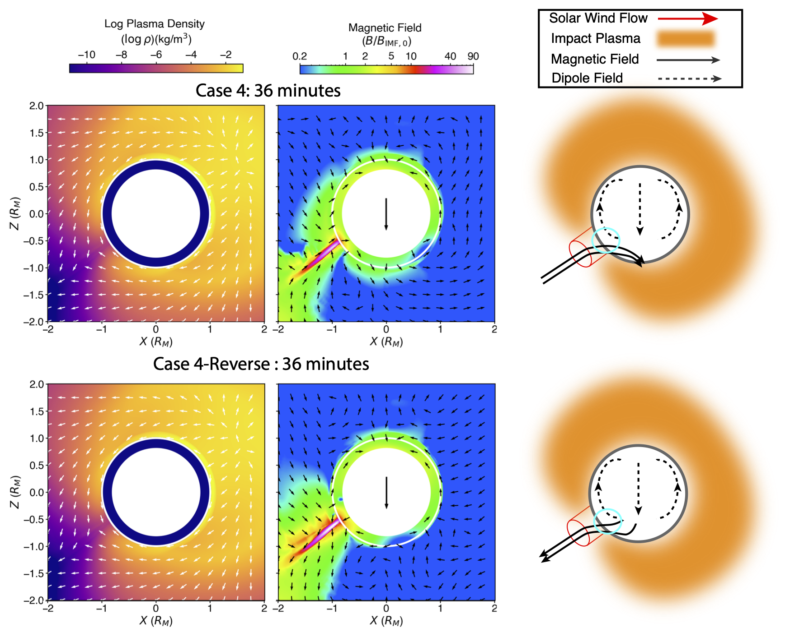
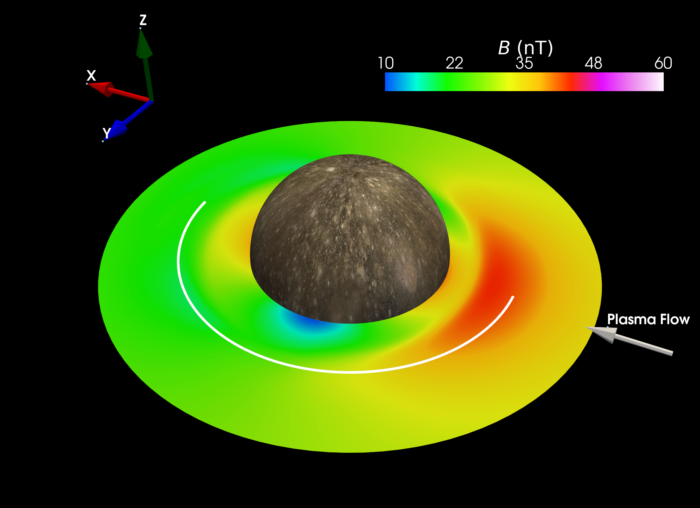
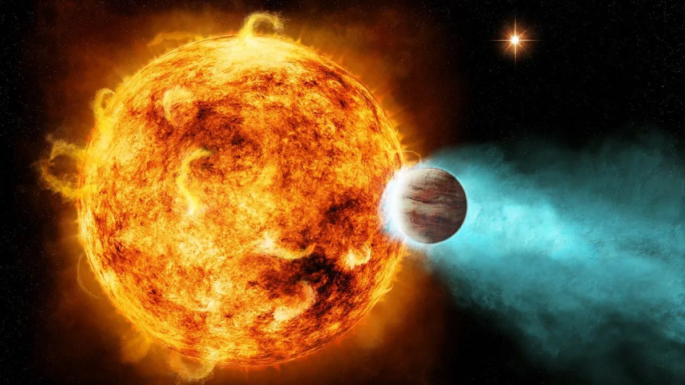

Research

Impact plasma amplification of the ancient lunar dynamo
Exploring how impact plasmas amplify dynamo fields
This project investigates the role of impact-generated plasmas in strengthening and recording the ancient lunar dynamo field. Read more →

Impact plasma amplification of the ancient Mercury magnetic field
Extending impact plasma models to Mercury
Building on lunar dynamo research, this project investigates how impact-generated plasmas could amplify Mercury's ancient magnetic field. Read more →

Crustal magnetization of Mercury
Constraining ancient dynamo strength
We model Mercury's ancient crustal anomalies and find that they require a stronger ancient dynamo. Read more →

Induction studies for Callisto
Probing subsurface oceans
A Bayesian reanalysis of Galileo data is used to confirm the presence of a global ocean on Callisto. Read more →

Axisymmetric High Spot Coverage on Exoplanet Host HD 189733 A
Characterizing stellar heterogeneity of a classic hot Jupiter
We characterize the heterogeneity of HD 189733 A to explore the "transit light source" effect. Read more →
Image credit: NASA/Ames/JPL-Caltech